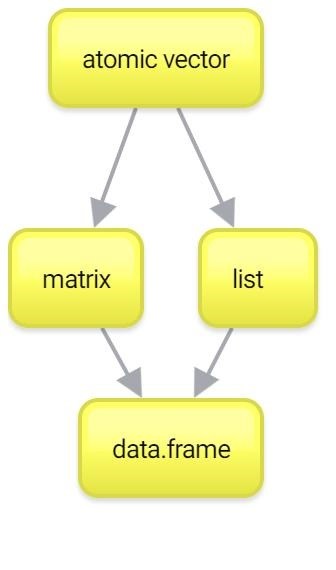

- 1 О курсе
- 2 Введение в R
- 3
tidyverse: Загрузка и трансформация данных - 4 Визуализация данных
- 5 Условия и работа со списками
- 6 Представление данных: rmarkdown, github, shiny
- 7 Работа со строками
- 8 Работа с текстами: tidytext, udpipe
- 9 Сбор данных из интернета: rvest
- 10 Нестандартные данные: время, OCR, карты
- 11 Задания
- 12 Решения_заданий
- Ссылки на литературу
2.7 Вектор
Если у вас не было линейной алгебры (или у вас с ней было все плохо), то просто запомните, что вектор (или atomic vector или atomic) — это набор (столбик) чисел в определенном порядке.
P.S. Если вы привыкли из школьного курса физики считать вектора стрелочками, то не спешите возмущаться и паниковать. Представьте стрелочки как точки из нуля координат {0,0} до какой-то точки на координатной плоскости, например, {2,1}. Вот последние два числа и будем считать вектором. Поэтому постарайтесь на время выбросить стрелочки из головы.
На самом деле, мы уже работали с векторами в R, но, возможно, Вы об этом даже не догадывались. Дело в том, что в R нет как таковых “значений”, есть вектора длиной 1. Такие дела!
Чтобы создать вектор из нескольких значений, нужно воспользоваться функцией c():
## [1] 4 8 15 16 23 42## [1] "Хэй" "Хэй" "Ха"Одна из самых мерзких и раздражающих причин ошибок в коде — это использование
сиз кириллицы вместоcиз латиницы. Видите разницу? И я не вижу. А R видит. И об этом сообщает:
## Error in с(3, 4, 5): could not find function "с"Для создания числовых векторов есть удобный оператор :
## [1] 1 2 3 4 5 6 7 8 9 10## [1] 5 4 3 2 1 0 -1 -2 -3Этот оператор создает вектор от первого числа до второго с шагом 1. Вы не представляете, как часто эта штука нам пригодится… Если же нужно сделать вектор с другим шагом, то есть функция seq():
## [1] 10 20 30 40 50 60 70 80 90 100Кроме того, можно задавать не шаг, а длину вектора. Тогда шаг функция seq() посчитает сама:
## [1] 1 5 9 13Другая функция — rep() — позволяет создавать вектора с повторяющимися значениями. Первый аргумент — значение, которое нужно повторять, а второй аргумент — сколько раз повторять.
## [1] 1 1 1 1 1И первый, и второй аргумент могут быть векторами!
## [1] 1 2 3 1 2 3 1 2 3## [1] 1 2 2 3 3 3Еще можно объединять вектора (что мы, по сути, и делали, просто с векторами длиной 1):
## [1] "Hey" "Ho" "Let's" "Go!"2.7.1 Coercion
Что будет, если вы объедините два вектора с значениями разных типов? Ошибка? Мы уже обсуждали, что в atomic может быть только один тип данных. В некоторых языках программирования при операции с данными разных типов мы бы получили ошибку. А вот в R при несовпадении типов пройзойдет попытка привести типы к “общему знаменателю”, то есть конвертировать данные в более “широкий” тип.
Например:
## [1] 0 2FALSE превратился в 0 (а TRUE превратился бы в 1), чтобы можно было оба значения объединить в вектор. То же самое произошло бы в случае операций с векторами:
## [1] 3Это называется coercion. Более сложный пример:
## [1] "TRUE" "3" "Привет"У R есть иерархия коэрсинга:
NULL < raw < logical < integer < double < complex < character < list < expression.
Мы из этого списка еще многого не знаем, сейчас важно запомнить, что логические данные — TRUE и FALSE — превращаются в 0 и 1 соответственно, а 0 и 1 в строчки "0" и "1".
Если Вы боитесь полагаться на coercion, то можете воспользоваться функциями as.нужныйтипданных:
## [1] 1 0 0## [1] "1" "0" "0"Можно превращать и обратно, например, строковые значения в числовые. Если среди числа встретится буква или другой неподходящий знак, то мы получим предупреждение NA — пропущенное значение (мы очень скоро научимся с ними работать).
## Warning: NAs introduced by coercion## [1] 1 2 NA2.7.2 Операции с векторами
Все те арифметические операции, что мы использовали ранее, можно использовать с векторами одинаковой длины:
## [1] 5 5 5 5## [1] -3 -1 1 3## [1] 4 6 6 4## [1] 0.2500000 0.6666667 1.5000000 4.0000000## [1] -11 5 11 7Если после какого-нибудь MATLAB Вы привыкли, что по умолчанию операторы работают по правилам линейной алгебры и
m*nбудет давать скалярное произведение (dot product), то снова нет. Для скалярного произведения нужно использовать операторы с%по краям:
## [,1]
## [1,] 20Абсолютно так же и с операциями с матрицами в R, хотя про матрицы будет немного позже.
В принципе, большинство функций в R, которые работают с отдельными значениями, так же хорошо работают и с целыми векторами. Скажем, Вы хотите извлечь корень из нескольких чисел, для этого не нужны никакие циклы (как это обычно делается в других языках программирования). Можно просто “скормить” вектор функции и получить результат применения функции к каждому элементу вектора:
## [1] 1.000000 1.414214 1.732051 2.000000 2.236068 2.449490 2.645751
## [8] 2.828427 3.000000 3.1622782.7.3 Recycling
Допустим мы хотим совершить какую-нибудь операцию с двумя векторами. Как мы убедились, с этим обычно нет никаких проблем, если они совпадают по длине. А что если вектора не совпадают по длине? Ничего страшного! Здесь будет работать правило ресайклинга (recycling = правило переписывания). Это означает, что если короткий вектор кратен по длине длинному, то он будет повторять короткий необходимое количество раз:
## [1] 1 4 3 8А что будет, если совершать операции с вектором и отдельным значением? Можно считать это частным случаем ресайклинга: короткий вектор длиной 1 будет повторятся столько раз, сколько нужно, чтобы он совпадал по длине с длинным:
## [1] 2 4 6 8Если же меньший вектор не кратен большему (например, один из них длиной 3, а другой длиной 4), то R посчитает результат, но выдаст предупреждение.
## Warning in n + c(3, 4, 5): longer object length is not a multiple of
## shorter object length## [1] 4 6 8 7Проблема в том, что эти предупреждения могут в неожиданный момент стать причиной ошибок. Поэтому не стоит полагаться на ресайклинг некратных по длине векторов. См. здесь. А вот ресайклинг кратных по длине векторов — это очень удобная штука, которая используется очень часто.
2.7.4 Индексирование векторов
Итак, мы подошли к одному из самых сложных моментов. И одному из основных. От того, как хорошо вы научись с этим работать, зависит весь Ваш дальнейший успех на R-поприще!
Речь пойдет об индексировании векторов. Задача, которую Вам придется решать каждые пять минут работы в R - как выбрать из вектора (или же списка, матрицы и датафрейма) какую-то его часть. Для этого используются квадратные скобочки [] (не круглые - они для функций!).
Самое простое - индексировать по номеру индекса, т.е. порядку значения в векторе.
## [1] 1## [1] 10Если вы знакомы с другими языками программирования (не MATLAB, там все так же) и уже научились думать, что индексация с 0 — это очень удобно и очень правильно (ну или просто свыклись с этим), то в R Вам придется переучиться обратно. Здесь первый индекс — это 1, а последний равен длине вектора — ее можно узнать с помощью функции
length(). С обоих сторон индексы берутся включительно.
С помощью индексирования можно не только вытаскивать имеющиеся значения в векторе, но и присваивать им новые:
## [1] 1 2 20 4 5 6 7 8 9 10Конечно, можно использовать целые векторы для индексирования:
## [1] 4 5 6 7## [1] 10 9 8 7 6 5 4 20 2 1Индексирование с минусом выдаст вам все значения вектора кроме выбранных (простите, пользователя Python, которые ожидают здесь отсчет с конца…):
## [1] 2 20 4 5 6 7 8 9 10## [1] 1 2 20 6 7 8 9 10Более того, можно использовать логический вектор для индексирования. В этом случае нужен логический вектор такой же длины:
## [1] 1 20 5 7 9Ну а если они не равны, то тут будет снова работать правило ресайклинга!
## [1] 1 20 5 7 9Есть еще один способ индексирования векторов, но он несколько более редкий: индексирование по имени. Дело в том, что для значений векторов можно (но не обязательно) присваивать имена:
## first
## 1А еще можно “вытаскивать” имена из вектора с помощью функции names() и присваивать таким образом новые.
## a
## 1
letters- это “зашитая” в R константа - вектор букв от a до z. Иногда это очень удобно! Кроме того, есть константаLETTERS- то же самое, но заглавными буквами. А еще есть названия месяцев на английском и числовая константаpi.
Теперь посчитаем среднее вектора n:
## [1] 7.2А как вытащить все значения, которые больше среднего?
Сначала получим логический вектор — какие значения больше среднего:
## [1] FALSE FALSE TRUE FALSE FALSE FALSE FALSE TRUE TRUE TRUEА теперь используем его для индексирования вектора n:
## [1] 20 8 9 10Можно все это сделать в одну строчку:
## [1] 20 8 9 10Предыдущая строчка отражает то, что мы будем постоянно делать в R: вычленять (subset) из данных отдельные куски на основании разных условий.
2.7.5 NA — пропущенные значения
В реальных данных у нас часто чего-то не хватает. Например, из-за технической ошибки или невнимательности не получилось записать какое-то измерение. Для этого в R есть NA. NA — это не строка "NA", не 0, не пустая строка "" и не FALSE. NA — это NA.
Большинство операций с векторами, содержащими NA будут выдавать NA:
## [1] NA## [1] NA## [1] NAЗаметьте: даже сравнение NA c NA выдает NA!
Иногда NA в данных очень бесит:
## [1] 1 2 20 4 NA 6 7 8 9 10## [1] NAЧто же делать?
Наверное, надо сравнить вектор с NA и исключить этих пакостников. Давайте попробуем:
## [1] NA NA NA NA NA NA NA NA NA NAАх да, мы ведь только что узнали, что даже сравнение NA c NA приводит к NA.
Чтобы выбраться из этой непростой ситуации, используйте функцию is.na():
## [1] FALSE FALSE FALSE FALSE TRUE FALSE FALSE FALSE FALSE FALSEРезультат выполнения is.na(n) выдает FALSE в тех местах, где у нас числа и TRUE там, где у нас NA. Нам нужно сделать наоборот. Здесь нам понадобится оператор ! (мы его уже встречали), который инвертирует логические значения:
## [1] 1 2 20 4 6 7 8 9 10Ура, мы можем считать среднее!
## [1] 7.444444Теперь Вы понимаете, зачем нужно отрицание (!)
Вообще, есть еще один из способов посчитать среднее, если есть NA. Для этого надо залезть в хэлп по функции mean():
В хэлпе мы найдем параметр na.rm =, который по дефолту FALSE. Вы знаете, что нужно делать!
## [1] 7.444444Еееее!
NAможет появляться в векторах других типов тоже. КромеNAесть ещеNaN— это разные вещи.NaNрасшифровывается как Not a Number и получается в результате таких операций как0/0.
2.7.6 В любой непонятной ситуации — ищите в поисковике
Если вдруг вы не знаете, что искать в хэлпе, или хэлпа попросту недостаточно, то… ищите в поисковике!

Нет ничего постыдного в том, чтобы искать в Интернете решения проблем. Это абсолютно нормально. Используйте силу интернета во благо и да помогут Вам Stackoverflow и бесчисленные R-туториалы!
Computer Programming To Be Officially Renamed “Googling Stack Overflow”
— Stack Exchange July 20, 2015
Source: http://t.co/xu7acfXvFF pic.twitter.com/iJ9k7aAVhd
Главное, помните: загуглить работающий ответ всегда недостаточно. Надо понять, как и почему он работает. Иначе что-то обязательно пойдет не так.
Кроме того, правильно загуглить проблему — не так уж и просто.
Does anyone ever get good at R or do they just get good at googling how to do things in R
— 🔬🖤Lauren M. Seyler, Ph.D.❤️⚒ href=“https://twitter.com/mousquemere/status/1125522375141883907?ref_src=twsrc%5Etfw”>May 6, 2019
Итак, с векторами мы более-менее разобрались. Помните, что вектора — это один из краеугольных камней Вашей работы в R. Если Вы хорошо с ними разобрались, то дальше все будет довольно несложно. Тем не менее, вектора — это не все. Есть еще два важных типа данных: списки (list) и матрицы (matrix). Их можно рассматривать как своеобразное “расширение” векторов, каждый в свою сторону. Ну а списки и матрицы нужны чтобы понять основной тип данных в R — data.frame.
